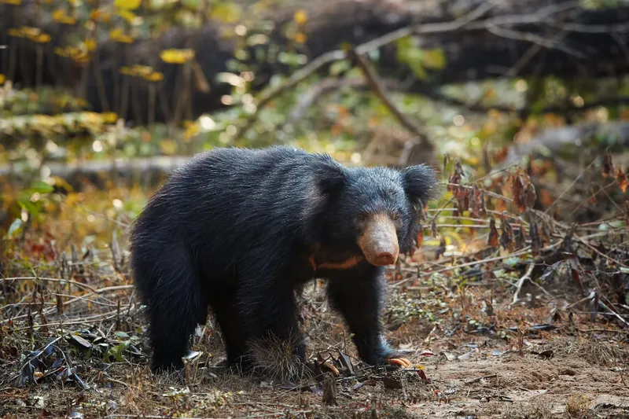
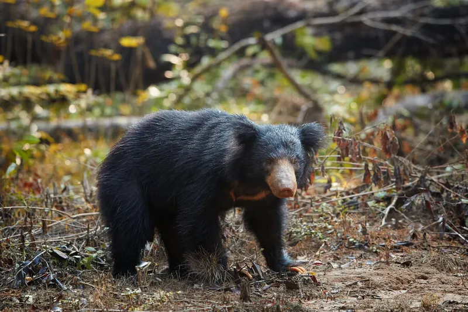

Prominent Wildlife Locations In Sri Lanka
Sinharaja Forest Reserve
One of Sri Lanka's least altered and biologically distinctive lowland rain forests is Sinharaja.
It is a national park in Sri Lanka and a hotspot for biodiversity. UNESCO has named it a World Heritage
Site and Biosphere Reserve, indicating its international significance.This dense rain forest, which is
close to Ratnapura, is home to an incredible array of natural wonders. These include refreshing waterfalls,
swift-moving streams, and pure freshwater streams.
Although leopards are extremely rare to see in person, their frequent presence has been verified by
tracks and other indicators. The most uncommon birds in Sri Lanka are the Green-billed Coucal, the rarest
of all Sri Lankan birds, the Ashy-headed Barbbler, the Red-faced Malkoha, the Sri Lanka Blue Magpie, and
the White-headed Starling.
Visitors can find a comfortable accomodation in the Sinharaja Forest Edge hotel, located only 6.3km away from
the forest site.


Mirissa Coastline
Mirissa is a stunning beach town in the centre of Sri Lanka's south coast.It has beautiful
beaches, fantastic sunset views, and an abundance of delicious dining options.This coastline
is always bustling with fun activites and attractions. The Coconut Hill Tree area is a summit
with an amazing sunset view amongst the many hundreds of palm trees encircling the area.
The Secret Beach is one of the best places to go surfing, snorkelling, swimming and for
sighting turtles.Mirissa is famous for its nightlife and bars.
Among the most popular activities in the region is whale watching. The best months to see blue
whales are March and April during the whale watching season, which runs from November to April.
The public bus from Unawatuna to Mirissa costs just $0.40 USD per person and takes takes about
an hour for the whole journey. There are plenty of hotels in this area. A popular accomodation spot
being the Paradise Beach Resort.


Wasgamuwa National Park
Wasgamuwa National Park is situated 225 kilometres from Colombo in the districts of Matale and Polonnaruwa.
Rivers almost entirely surround the park, and its natural beauty is further enhanced by the small mountain
range of the Sudu Kanda and the small streams that follow it.
As early as 1938, a portion of Wasgamuwa was designated as a Strict Nature Reserve. There is a wide variety
of wildlife in the park because of the early conservation efforts. Wasgamuwa is home to 140 species of birds
and 23 species of mammals.Large herds of Sri Lankan axis deers and water buffalos are frequently spotted in
this area. Wasgamuwa is well-known as the place for elephant herds and sloth bear spotting.
Visitors are provided a Safari jeep and a tourguide for the tour.Three wildlife bungalows can be found in
Wasgamuwa National Park: Kadurupitiya, Mahaweli, and Wawul Ebe. Accommodation would therefore not be a problem.

 



Horton Plains National Park
Horton Plains is spread over the southern ridge of the central highlands in between Nuwara
Eliya and Haputale.It is the coldest and windiest location in the country. It consists of
ecosystems such as Montane evergreen forests, grasslands, marshy lands and aquatic ecosystems.
It is the highest tableland of the island. Horton Plains was declared a UNESCO World Heritage
Site in 2010.
The World’s End in Horton Plains gives a lovely view of the low lying plains of the southern
Sri Lanka.Visitors cn enjoy a 9km main trek of the Horton Plains taking a circular route which
can be enjoyed within 3 hours.Horton Plains is a good place to spot herds of Sambar Deer,leopards,
wild boars and monkeys.
There are many hotels found within 15km from the park.


Sea Turtle Hatchery Centre
The Mahamodara Sea Turtle Hatchery is a turtle conservation centre in Galle
and it can be reached by a short drive from Galle. Here,volunteers strive
to preserve Sea Turtles who are sure to reach destruction if left uncared
for. Many sea turtles of all sizes are being cared for and left in their
natural habitat here; you can help them hatch and raise their litters by
keeping their area free of trash.
If your tour was satisfactory, it is encouraged to offer the centre a small
donation in order to support a worthy cause. You could also join the
conservation efforts as a volunteer and participate in activities like
collecting turtle eggs, breeding and caring for these incredible animals.


Pinnawala Elephant Orphanage
The Pinnawala Elephant Orphanage is situated northwest of the town of Kegalle,
at a distance of 90km from Colombo.The orphanage was originally founded in order
to afford care and protection to the many orphaned Elephants found in the
jungles of Sri Lanka.
There are many daily activities available for visitors which inlcude feeding
the elephants, bathing the elephants, watching elephant herds and riding on elephants.
The entrance to the orphanage centre is lined with several small shops from which
visitors can buy Sri Lankan souvenirs.
Moreover, Pinnawala is an elephant paradise!


| Location | Reknowned Animal Sightings | Did you know? |
|---|---|---|
| Sinharaja Forest Reserve |
|
Sinharaja world heritage site is rich in bird life with an impressive 147 species recorded to date. It is also the only location where 21 out of 26 bird species endemic to Sri Lanka may be viewed. |
| Mirissa Coastline |
|
Mirissa attracts tourists not only for its coastal wildlife but for other fun activities including surfing, snorkeling and its vibrant nightlife. |
| Wasgamuwa National Park |
|
Sloth bears are not commonly spotted in many wildlife regions in
Sri Lanka. Wasgamuwa is one of the very few places where you are likely
to spot this fascinating creature. Tourists often describe this park as an ‘Elephant Paradise’. |
| Horton Plains National Park |
|
Horton Plains is reknowned for its breathtaking scenery, amazing waterfalls, the World’s End reservoir view and its three-hour long hiking trail. |
| Sea Turtle Hatchery Centre |
|
Turtle nesting season in Sri Lanka takes place between November and May, while hatching season falls between January and June (peak February - April). You may like to bear this in mind when selecting your visit dates. |
| Pinnawala Elephant Orphanage |
|
As of 2023,Pinnawala has the largest herd of captive elephants in the world. |
| All information contained here is true as of January 2024. | ||